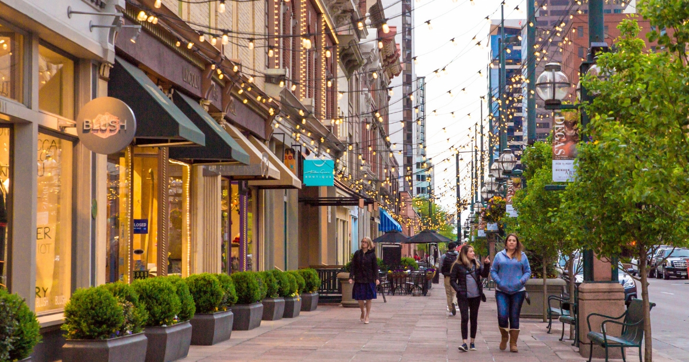
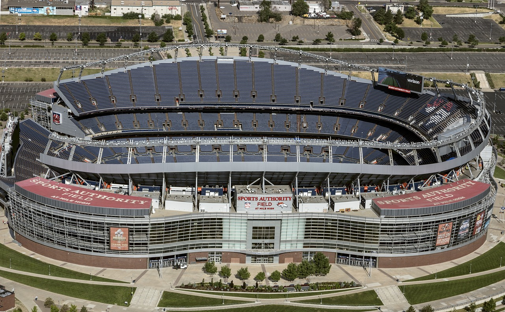
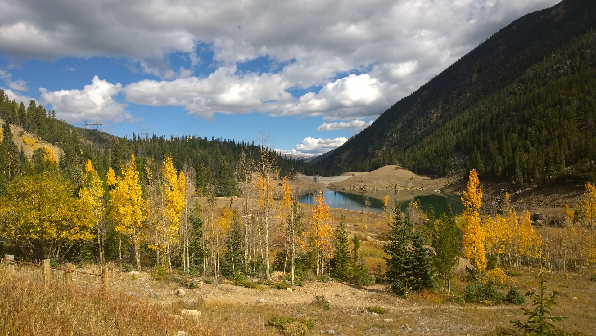

Gold Rush
In 1858, gold flecks were found in the water near Cherry Creek. This lead many to fled towards the city and thus growing Denver into a world-class metropolis.
Colorado Center
Colorado Center holds the most memorable experiences. Located in downtown Denver, it is infused with high-tech businesses, residential high-rises, shopping and more.
Larimer Square
Larimer Square used to be a pioneer town years ago. Today, it is the home to many many shops, boutiques, nightclubs and restaurants.
Denver Broncos
Denver is the home of the professional football franchise Denver Broncos. The Broncos are owned by Pat Bowlen trust. They've earned three Super Bowl championships (1997, 1998, 2015).
Cherry Creek Trail
Cherry Creek Trail provides a relaxing scenic view. Enjoy a nice walk or bike rid away from all the high traffic areas.
Denver Beer

Denver has been the home of the Great American Beer Festival for over 30 years. After gold was was discovered, many pioneers considered the city as their new home. Saloons and barrooms were field with people being social over a glass of beer.